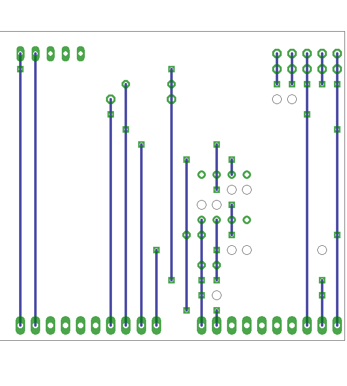

6. Curve tracer
Status: OK
connections:
| pwm |
D9 |
| rail |
D10 |
| amp_out |
A1 |
| x_in |
A2 |
| x_out |
A3 |
6.2. Board
top view:
wires only:
bottom view mirrored:

6.3. Partlist
| part |
value |
position |
|---|
| C1 |
100n |
(2.15 0.5) |
| C2 |
100n |
(2.25 0.7) |
| IC2 |
MC33201 |
(2.05 0.95) |
| PC |
|
(2.95 0.1) |
| PD |
|
(1.75 0.1) |
| R1 |
120 |
(1.7 0.7) |
| R4 |
100k |
(1.7 0.3) |
| R7 |
68k |
(1.9 0.4) |
| SV1 |
|
(1.5 1.85) |